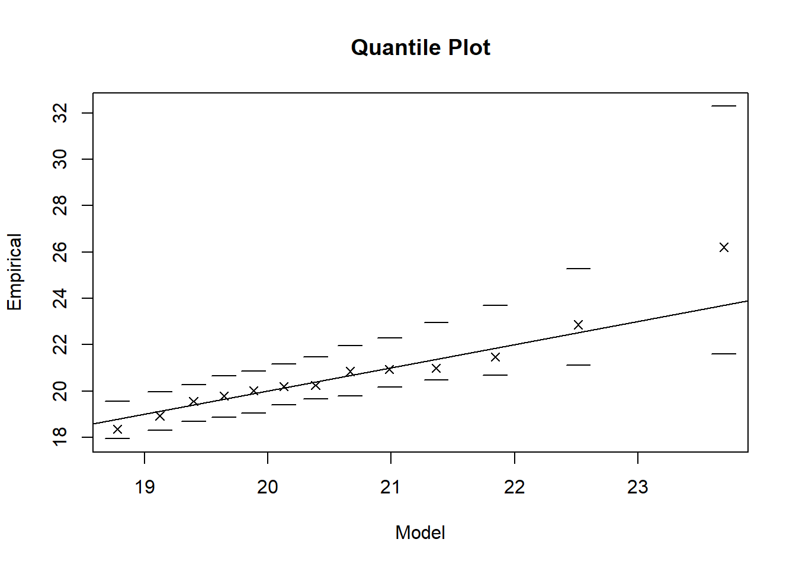

#install.packages("evd", "dplyr")
library(evd)
library(dplyr)1 Implementing Univariate Extreme Value Theory in R: A Step-by-Step Guide
2 Introduction
Univariate Extreme Value Theory (UEVT) focuses on analyzing the extreme tails of a dataset. These extremes might include record-high temperatures, large floods, or other unusually high values. UEVT is particularly relevant in climate science, where researchers often need to quantify the probability or severity of extreme weather events.
Within UEVT, there are two primary methods: block maxima and peaks over threshold. The block maxima method entails:
- Dividing data into equally sized blocks (e.g., by year or by month).
- Recording the maximum value in each block.
- Fitting a Generalized Extreme Value (GEV) distribution to these maxima.
This guide focuses on the block maxima approach because it’s straightforward for time-based datasets, such as annual maximum temperatures or monthly rainfall maxima.
3 Prerequisites
A basic understanding of statistics is a must. More particularly a solid understanding of distributions, likelihood concepts, and parameter estimation. Proficiency in R or any statistical software is also necessary as these calculations will be demonstrated on R. Will need the “evd” and “dplyr” packages to follow along with the example. When using on a real data set, the data needs to have a time component and a response variable needs to be selected. Missing values should be ommited from the data. Also, do not remove any extreme values as that is what will be measured.
Installing the packages:
4 Implementation & Explanation
First step is to make sure your data set is clean, free of NAs, has a time variable, and a response variable that you would like to find the UEVT for. For simplicity’s sake, in this example we will be creating our own dataset which looks at daily rainfall over a year long period.
Creating the data:
# Set the seed for reproducibility
set.seed(123)
# Generate a sequence of daily dates
dates <- seq.Date(
from = as.Date("2002-11-08"),
to = as.Date("2003-11-07"),
by = "day"
)
# Simulate daily rainfall (in mm) around a mean of 10, with some variability
rainfall_values <- rnorm(
n = length(dates),
mean = 10,
sd = 5
)
# Ensure no negative rainfall
rainfall_values[rainfall_values < 0] <- 0
rainfall_values <- round(rainfall_values, 2)
# Combine into a data frame
df <- data.frame(
Date = dates,
Rainfall = rainfall_values
)
# Look at the first few rows
head(df) Date Rainfall
1 2002-11-08 7.20
2 2002-11-09 8.85
3 2002-11-10 17.79
4 2002-11-11 10.35
5 2002-11-12 10.65
6 2002-11-13 18.58The second step is to define the blocks. This is done on the date column and could be any values you desire. For this example we will split the days into two blocks so that the blocks are a week long each.
Creating the blocks:
# Turn the dates into months
df_blocked <- df %>%
mutate(
YearMonth = format(Date, "%Y-%m")
)
head(df_blocked) Date Rainfall YearMonth
1 2002-11-08 7.20 2002-11
2 2002-11-09 8.85 2002-11
3 2002-11-10 17.79 2002-11
4 2002-11-11 10.35 2002-11
5 2002-11-12 10.65 2002-11
6 2002-11-13 18.58 2002-11Next is to find the maximum value in each block. This new dataframe with just the maximum values and blocks will be the dataframe we use to fit a GEV distribution.
Extracting the maxima:
# Extract the maximum value from each month and create a new df with these parameters
df_maxima <- df_blocked %>%
group_by(YearMonth) %>%
summarise(
MonthlyMax = max(Rainfall, na.rm = TRUE)
) %>%
ungroup()
df_maxima# A tibble: 13 × 2
YearMonth MonthlyMax
<chr> <dbl>
1 2002-11 18.9
2 2002-12 20.8
3 2003-01 20.2
4 2003-02 20.9
5 2003-03 19.6
6 2003-04 26.2
7 2003-05 21.0
8 2003-06 19.8
9 2003-07 21.5
10 2003-08 20.0
11 2003-09 20.2
12 2003-10 18.4
13 2003-11 22.9To begin the analysis the maxima df is fitted to the GEV. This will return a model that will tell us the typical level of monthly maxima, the variability of the maxima, and the shape of the data.
# The fgev function from the evd package fits the GEV
gev_fit <- fgev(df_maxima$MonthlyMax)
gev_fit
Call: fgev(x = df_maxima$MonthlyMax)
Deviance: 48.39891
Estimates
loc scale shape
19.9190 1.2434 0.1162
Standard Errors
loc scale shape
0.3865 0.2904 0.2020
Optimization Information
Convergence: successful
Function Evaluations: 31
Gradient Evaluations: 7 How to interpret the table: loc: Location, this is essentialy the average of the maxima for each block. In this case the average high of rainfall each month is about 20mm. scale: Scale, this tells how spread out the data is. In our case, the monthly maxima can vary by about 1.25mm from the location value. shape: Shape, this tells us how likely we are to see extreme values that exceed the average maxima. A shape value greater than 0 suggests an extreme event that exceeds the monthly maxima is likely to happen; less than 0 suggests that extreme events are not likely at all, closer to impossible. In our case we have a shape greater than 0, but our standard error is very large in comparison. This means there is large variability and we cannot accurately predict whether or not extreme events are likely.
The next step is to analyze the goodness of fit of the model, this will help determine what is going on with the shape. We will be using the q-q plot which is one of the fastest ways to determine the goodness of fit.
plot(gev_fit, which = 2)
The q-q plot takes the empirical values from the data (y-axis) and fits them with the expected values from the model (x-axis). From our plot we can see that our most extreme value is above the model. This is probably why the standard error of our shape was high compared the value of shape.
5 Conclusion
In this guide, we demonstrated how to implement Univariate Extreme Value Theory (UEVT) using the block maxima approach, fit a Generalized Extreme Value (GEV) model, and evaluate the model’s fit using a Q-Q plot.
By splitting data into blocks (e.g., monthly or yearly) and extracting maxima, we capture the most extreme values. The Q-Q plot then helps verify whether the GEV parameters provide a good match for those extremes. If most points lie near the diagonal, it indicates that the model captures the distribution of maxima reasonably well.
Overall, this process offers a straightforward way to interpret rare events in a timeframe.